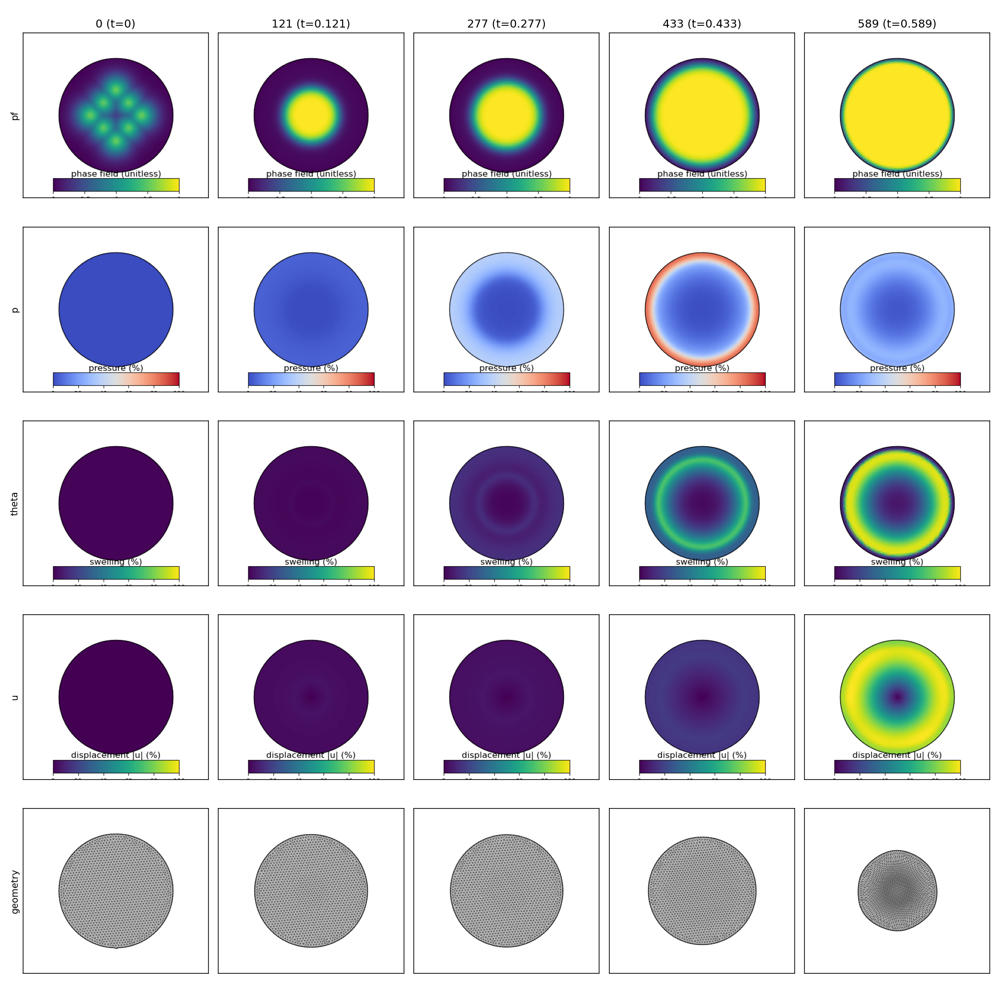
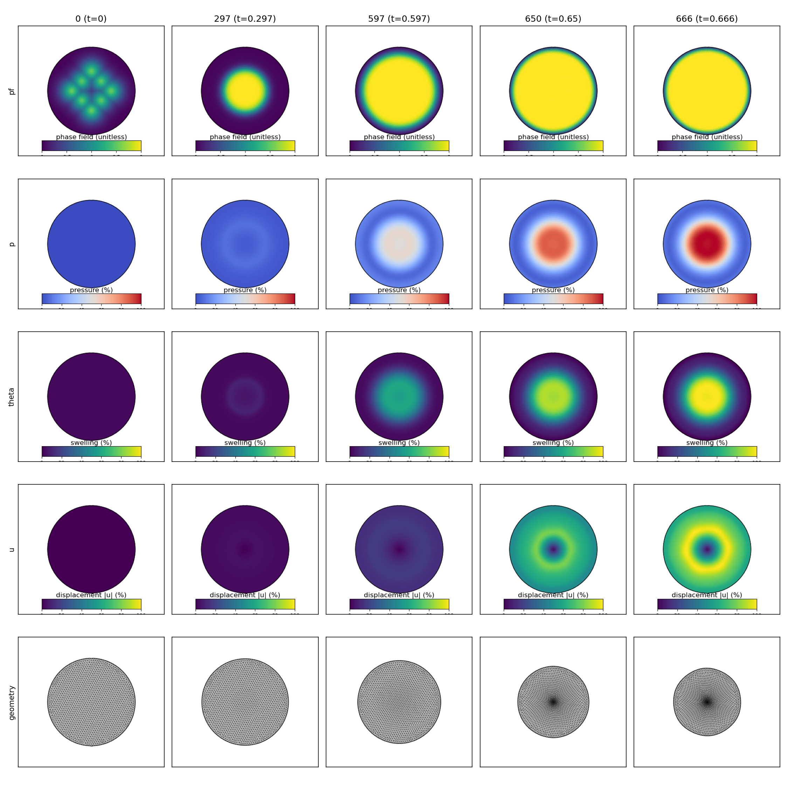
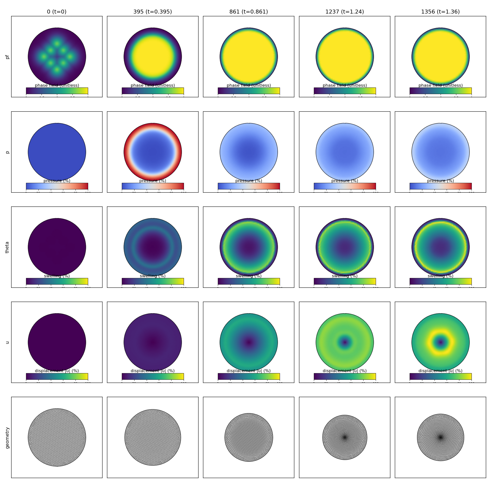
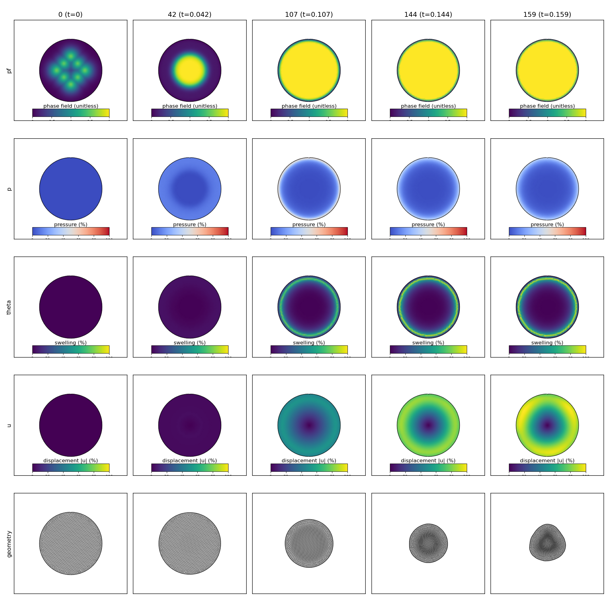

WIP Diagnostic Study
Canonical Disk Mass-Injecting Growth WIP Diagnostic Study
This is a promoted first-class diagnostic study for the interrupted mass-injecting growth campaign. It preserves the same reporting grammar as the completed studies, but keeps the WIP/forensic status explicit.
Interrupted after ETA review showed multi-day to multi-week completion times under reduced-dt regimes, with multiple solver failures already present. Preserving partial fields for WIP comparison.
Overall Analysis
The study answered the near-term scientific question even though the full 8x matrix did not complete. The positive result is that source-driven mass addition can be pushed into the same broad timescale family as the kinematic-growth study. The negative result is that robustness depends strongly on modality and source strength, and some interrupted/failed runs left unreadable field files.
- Runs with full visual artifacts: 5 / 9
- Runs that failed before shutdown: 5
- Best media-bearing cases: canonical-disk-mi-calibration-homogeneous-srate15-tend14p0-v1, canonical-disk-mi-calibration-homogeneous-srate30-tend7p0-v1, canonical-disk-mi-calibration-lumen-srate75-tend2p8-v1
- Forensic-only cases: canonical-disk-mi-calibration-homogeneous-srate75-tend2p8-v1, canonical-disk-mi-calibration-lumen-srate15-tend14p0-v1, canonical-disk-mi-calibration-lumen-srate30-tend7p0-v1, canonical-disk-mi-calibration-tissue-srate30-tend7p0-v1
Tracked cases
Solver-recorded failures
Cases with usable montage/video evidence
Cases that were still advancing at shutdown
What Worked
- The shared source-rate family generated meaningful large-mass responses quickly enough to diagnose the regime instead of leaving the study underdriven.
- Five cases retained enough accepted-step field output to package the usual montage and video artifacts for collaborator review.
- The interrupted campaign comparison page and the per-run pages remain useful because they preserve the mixed positive/negative evidence rather than collapsing everything into a single status line.
What Did Not
- A single shared source-rate ladder did not remain uniformly stable across tissue, homogeneous, and lumen localization.
- At least one slow homogeneous case failed, so the problem is not just “fast source is too aggressive”.
- Four partial runs ended with unreadable HDF5/XDMF field files, so some artifact loss is coupled to interruption/failure handling rather than to the scientific mechanism alone.
Failure Analysis
The observed pattern is not yet univocal. The run-level evidence is consistent with repeated Biot nonconvergence in a reduced-dt regime, but the precise physical trigger may differ across cases.
Possible causes
- Biot nonconvergence triggered by source-driven topological change while the timestep controller was already in a reduced-dt recovery band.
- Closed-boundary dual-phase storage under homogeneous or strong source injection may stiffen the coupled pressure-hydration response faster than the current monolithic SNES settings can relax it.
- Artifact loss in some interrupted cases came from unreadable partial HDF5/XDMF field files after interruption or earlier solver failure, so output corruption is a separate risk from the PDE failure itself.
- Homogeneous source injection distributes forcing everywhere, so the slow homogeneous failure may reflect a domain-wide conditioning problem rather than the same local lumen-collapse mechanism seen in the fast-source failures.
Case Status Matrix
| Case | Status | Mechanism | Mass Final | Area Ratio | Max u | ETA to 8x (h) | ETA to t_end (h) | Run page |
|---|---|---|---|---|---|---|---|---|
| canonical-disk-mi-calibration-homogeneous-srate15-tend14p0-v1 | failed | homogeneous | 3.283 | 0.487 | 0.361 | n/a | n/a | run page |
| canonical-disk-mi-calibration-homogeneous-srate30-tend7p0-v1 | failed | homogeneous | 3.655 | 0.323 | 0.587 | n/a | n/a | run page |
| canonical-disk-mi-calibration-lumen-srate75-tend2p8-v1 | failed | lumen | 3.614 | 0.592 | 0.398 | n/a | n/a | run page |
| canonical-disk-mi-calibration-tissue-srate15-tend14p0-v1 | failed | tissue | 3.326 | 0.658 | 0.324 | n/a | n/a | run page |
| canonical-disk-mi-calibration-tissue-srate75-tend2p8-v1 | failed | tissue | 3.483 | 0.329 | 0.489 | n/a | n/a | run page |
| canonical-disk-mi-calibration-homogeneous-srate75-tend2p8-v1 | interrupted | homogeneous | 4.246 | 0.144 | 0.697 | n/a | n/a | run page |
| canonical-disk-mi-calibration-lumen-srate15-tend14p0-v1 | interrupted | lumen | 3.482 | 0.570 | 0.366 | n/a | n/a | run page |
| canonical-disk-mi-calibration-lumen-srate30-tend7p0-v1 | interrupted | lumen | 3.802 | 0.538 | 0.442 | n/a | n/a | run page |
| canonical-disk-mi-calibration-tissue-srate30-tend7p0-v1 | interrupted | tissue | 3.640 | 0.554 | 0.401 | n/a | n/a | run page |
and summarize the promoted WIP matrix.
Per-Case Evidence
canonical-disk-mi-calibration-homogeneous-srate15-tend14p0-v1
source_region=homogeneous | source_pf=15.000

| mass_final | 3.283 |
|---|---|
| area_ratio_final | 0.487 |
| max_u_final | 0.361 |
| eta_to_8x_hours | n/a |
| eta_to_t_end_hours | n/a |
Key warnings
- 10 failed attempt row(s) recorded before acceptance/termination.
- Skipped analyze_lumen_components for interrupted WIP salvage; generated visual media only.
- Run status: failed / partial.
- Interruption reason: solver_nonconvergence.
canonical-disk-mi-calibration-homogeneous-srate30-tend7p0-v1
source_region=homogeneous | source_pf=30.000

| mass_final | 3.655 |
|---|---|
| area_ratio_final | 0.323 |
| max_u_final | 0.587 |
| eta_to_8x_hours | n/a |
| eta_to_t_end_hours | n/a |
Key warnings
- 48 failed attempt row(s) recorded before acceptance/termination.
- Skipped analyze_lumen_components for interrupted WIP salvage; generated visual media only.
- Run status: failed / partial.
- Interruption reason: solver_nonconvergence.
canonical-disk-mi-calibration-lumen-srate75-tend2p8-v1
source_region=lumen | source_pf=75.000

| mass_final | 3.614 |
|---|---|
| area_ratio_final | 0.592 |
| max_u_final | 0.398 |
| eta_to_8x_hours | n/a |
| eta_to_t_end_hours | n/a |
Key warnings
- 57 failed attempt row(s) recorded before acceptance/termination.
- Skipped analyze_lumen_components for interrupted WIP salvage; generated visual media only.
- Run status: failed / partial.
- Interruption reason: solver_nonconvergence.
canonical-disk-mi-calibration-tissue-srate15-tend14p0-v1
source_region=tissue | source_pf=15.000

| mass_final | 3.326 |
|---|---|
| area_ratio_final | 0.658 |
| max_u_final | 0.324 |
| eta_to_8x_hours | n/a |
| eta_to_t_end_hours | n/a |
Key warnings
- 98 failed attempt row(s) recorded before acceptance/termination.
- Skipped analyze_lumen_components for interrupted WIP salvage; generated visual media only.
- Run status: failed / partial.
- Interruption reason: solver_nonconvergence.
canonical-disk-mi-calibration-tissue-srate75-tend2p8-v1
source_region=tissue | source_pf=75.000

| mass_final | 3.483 |
|---|---|
| area_ratio_final | 0.329 |
| max_u_final | 0.489 |
| eta_to_8x_hours | n/a |
| eta_to_t_end_hours | n/a |
Key warnings
- 35 failed attempt row(s) recorded before acceptance/termination.
- Skipped analyze_lumen_components for interrupted WIP salvage; generated visual media only.
- Run status: failed / partial.
- Interruption reason: solver_nonconvergence.
canonical-disk-mi-calibration-homogeneous-srate75-tend2p8-v1
source_region=homogeneous | source_pf=75.000
The packaged case remains useful for diagnostics, but the partial field files were unreadable during postprocess.
| mass_final | 4.246 |
|---|---|
| area_ratio_final | 0.144 |
| max_u_final | 0.697 |
| eta_to_8x_hours | n/a |
| eta_to_t_end_hours | n/a |
Key warnings
- 71 failed attempt row(s) recorded before acceptance/termination.
- Post-processing did not complete; visual media may be missing or truncated.
- Post-process error: OSError: Unable to synchronously open file (bad object header version number)
- Skipped analyze_lumen_components for interrupted WIP salvage; generated visual media only.
canonical-disk-mi-calibration-lumen-srate15-tend14p0-v1
source_region=lumen | source_pf=15.000
The packaged case remains useful for diagnostics, but the partial field files were unreadable during postprocess.
| mass_final | 3.482 |
|---|---|
| area_ratio_final | 0.570 |
| max_u_final | 0.366 |
| eta_to_8x_hours | n/a |
| eta_to_t_end_hours | n/a |
Key warnings
- 67 failed attempt row(s) recorded before acceptance/termination.
- Post-processing did not complete; visual media may be missing or truncated.
- Post-process error: OSError: Unable to synchronously open file (bad object header version number)
- Skipped analyze_lumen_components for interrupted WIP salvage; generated visual media only.
canonical-disk-mi-calibration-lumen-srate30-tend7p0-v1
source_region=lumen | source_pf=30.000
The packaged case remains useful for diagnostics, but the partial field files were unreadable during postprocess.
| mass_final | 3.802 |
|---|---|
| area_ratio_final | 0.538 |
| max_u_final | 0.442 |
| eta_to_8x_hours | n/a |
| eta_to_t_end_hours | n/a |
Key warnings
- 96 failed attempt row(s) recorded before acceptance/termination.
- Post-processing did not complete; visual media may be missing or truncated.
- Post-process error: OSError: Unable to synchronously open file (bad object header version number)
- Skipped analyze_lumen_components for interrupted WIP salvage; generated visual media only.
canonical-disk-mi-calibration-tissue-srate30-tend7p0-v1
source_region=tissue | source_pf=30.000
The packaged case remains useful for diagnostics, but the partial field files were unreadable during postprocess.
| mass_final | 3.640 |
|---|---|
| area_ratio_final | 0.554 |
| max_u_final | 0.401 |
| eta_to_8x_hours | n/a |
| eta_to_t_end_hours | n/a |
Key warnings
- 127 failed attempt row(s) recorded before acceptance/termination.
- Post-processing did not complete; visual media may be missing or truncated.
- Post-process error: OSError: Unable to synchronously open file (bad object header version number)
- Skipped analyze_lumen_components for interrupted WIP salvage; generated visual media only.